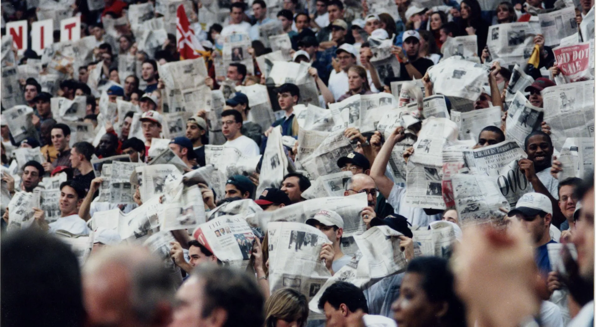
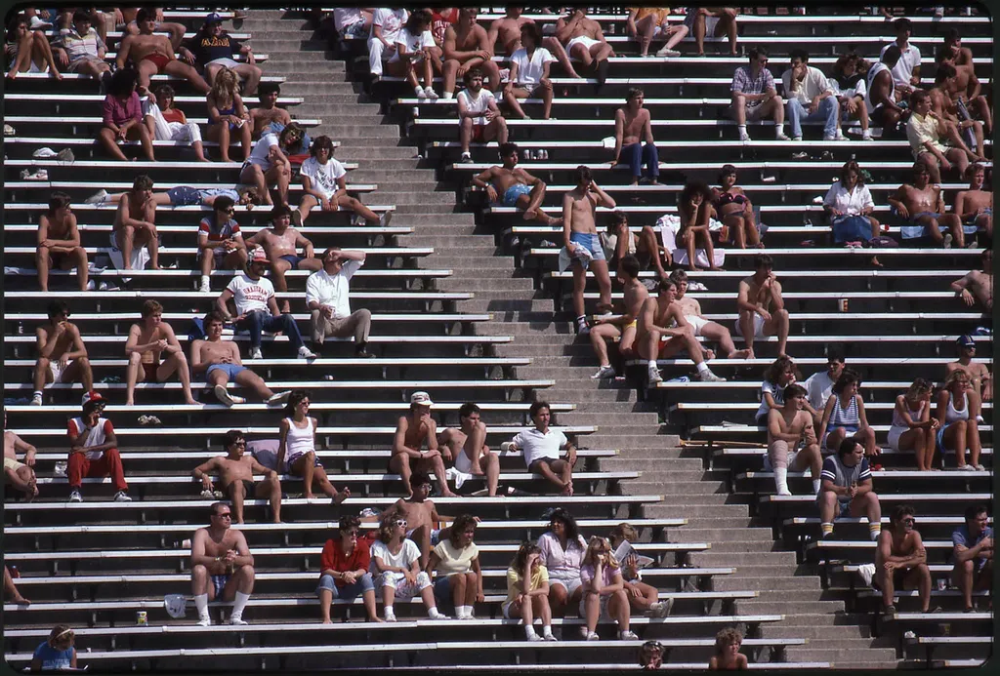

History & Traditions

From the 1910s to the 1960s, freshman students were required to wear beanies everywhere they went on campus, from their first day of school until the freshmen-sophomore tug-of-war, held during the spring semester. The beanies were known as "rat caps" for the men, and "rabbit caps" for the women.

For decades, until everyday access to the football stadium was cut off, students greeted the return of springtime warmth by donning their bathing suits and stretching out along the bleachers in then-Byrd Stadium to study, tan and people-watch.
What happened when the beanie-wearing freshmen squared off against their arch-nemesis, the sophomore class? In the early part of the 20th century, the competition involved first- and second-year students playing King of the Mountain on a 120-foot iron water tower located on campus.
This tradition continued until 1913 when wily sophomore Robert McCutcheon knocked down the freshman flag with a well-aimed rifle shot that severed its staff.
This annual struggle between the freshman and sophomore classes during the spring semester marked the end of the beanie-wearing season for the freshman. The traditional contest over Paint Branch Creek began about 1915 and continued into the early 1950s.
Located beneath Regents Drive south of Memorial Chapel, the historic Kissing Tunnel got its name by being a popular stop after a College Park date night back in the 1950s and 1960s, when all residence halls were single-gender.
Adele H. Stamp, the university's dean of women from 1922 to 1960, began the tradition of celebrating May Day at Maryland. The ceremony, last held in 1961, featured a Maypole dance, pageant, Mortar Board tapping for senior women and crowning of the queen.